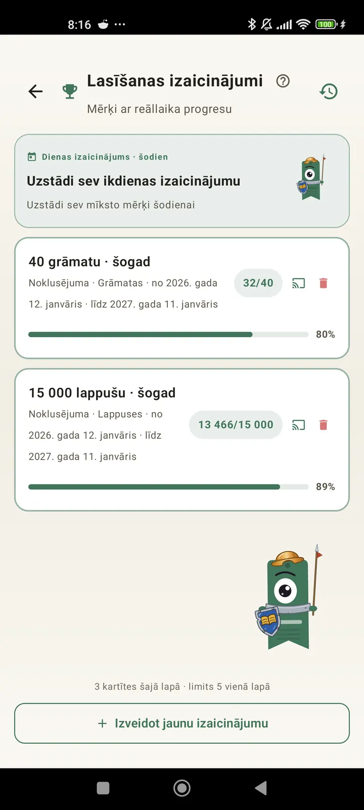

Iepazīsti sevi kā lasītāju
Izaicinājumi, bingo, logrīki un citas funkcijas, lai iegūtu maksimumu no lasīšanas. Jaunums 3.7 versijā: izaicinājumu un bingo logrīki.

Lasīšanas izaicinājumi
Izvirzi mērķus pēc lappusēm, sērijām vai žanriem. Līdz 15 aktīviem izaicinājumiem bez maksas, neierobežoti ar Pro. Turklāt pielāgojams dienas izaicinājums, kas neskaitās limitā.

Dienas izaicinājums
Katru dienu jauns mērķis. Izpildi izaicinājumu līdz pusnaktij, lai saglabātu sēriju.

Lasīšanas bingo
Katru mēnesi divi jauni bingo ar tematiskiem lauciņiem. Aizpildi rindas, kolonnas vai visu kartīti.

Nedēļas kopsavilkums
Katru pirmdienu tavas nedēļas pārskats: izlasītās lappuses, kopējais laiks, sērija un salīdzinājums ar iepriekšējo nedēļu.

Mēneša kopsavilkums
Kad mēnesis beidzas, Lecturameter to apkopo: lappuses, laiks, pabeigtās grāmatas, tavs temps pa dienām un tava mēneša grāmata.

Bingo logrīks Pro
Šī mēneša bingo kartīte vienmēr redzama, ar tavis aizpildītajiem lauciņiem un izveidotajām līnijām.

Grāmatas logrīks Bezmaksas
Redzi grāmatu, ko lasi, tieši sākuma ekrānā: vāks, nosaukums, autors, lappuses un progresa procenti, vienmēr aktuāli. Maināms izmērs, lai iederētos, kur vien vēlies.
Nopietni, vecīt, šī lietotne ir kā terapija. No pāris lappusēm dienā esmu ticis līdz kādām 20 lappusēm dienā un turpinu uzlabotiesLietotāja atsauksme, saņemta e-pastā

Mēnešu salīdzinājums Pro
Ātrs ieskats pēdējos mēnešos, neatverot lietotni. Stabiņi ar katra mēneša lappusēm un izcelts pašreizējais mēnesis, lai uzreiz redzētu, vai šomēnes tev iet labāk vai sliktāk nekā iepriekšējā.

Izaicinājumu logrīks Pro
Tavi aktīvie izaicinājumi un to progress sākuma ekrānā. Izvēlies, kurus rādīt, ekrānā Izaicinājumi.